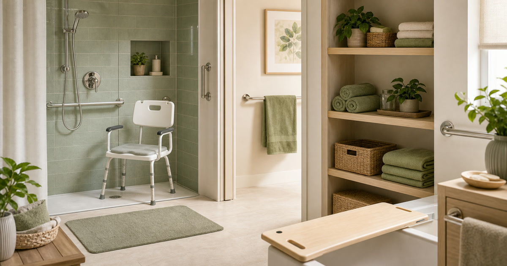

居家照護動線：沐浴、移位、收納與安全提醒怎麼看
居家照護動線要先看沐浴、移位、收納與照顧者流程，再比較輔具、濾淨、按摩與收納品。

居家照護用品最不能只看單一商品照片。沐浴、移位、擦乾、暫放衣物、收納耗材，每一步都牽涉空間、照顧者、使用者和濕滑環境。用品可以補位，但不能取代專業評估；真正該先建立的是動線，而不是先把浴室塞滿。
先畫出浴室入口到沐浴點
門寬、轉身空間、地面高低差、毛巾位置和換洗衣物暫放點，都要先看。若路徑不清楚，用品會變成障礙。
TWyzy新世代、一然健康與 EVERPOLL 可放在沐浴、照護與濾淨情境裡比較；使用限制與安裝條件要回商品頁確認。
Elite Fashion 編輯團隊的具體判斷是：居家照護動線先看浴室入口、移位路徑、濕物收納與照顧者拿取位置，不把用品當萬用解方。 這讓 TWyzy新世代(充氣)沐浴床包、一然健康 與其他選項能被放回同一個生活問題裡比較，而不是只看單一商品照片。
下單前仍要回商品頁確認規格、尺寸、材質、活動、庫存與配送；若資訊不足，先暫緩，比把不確定的物品帶回家更成熟。
- 先確認使用位置與拿取頻率。
- 再看保存、清潔、線材或收納條件。
- 最後才比較品牌、活動與預算。
移位用品要看承重與照顧者動作
移位板、沐浴椅或扶手都不是只看尺寸。承重、材質、固定方式、地面狀況和照顧者姿勢都需要被確認。
必要時應先詢問專業人員，不用商品文案替代評估。
Elite Fashion 編輯團隊的具體判斷是：居家照護動線先看浴室入口、移位路徑、濕物收納與照顧者拿取位置，不把用品當萬用解方。 這讓 TWyzy新世代(充氣)沐浴床包、一然健康 與其他選項能被放回同一個生活問題裡比較，而不是只看單一商品照片。
下單前仍要回商品頁確認規格、尺寸、材質、活動、庫存與配送；若資訊不足，先暫緩，比把不確定的物品帶回家更成熟。
- 先確認使用位置與拿取頻率。
- 再看保存、清潔、線材或收納條件。
- 最後才比較品牌、活動與預算。
Elite 嚴選
收納要靠近使用點
毛巾、清潔品、備用衣物、濕物袋和照護耗材最好按使用順序放置。拿不到的用品，在照護當下等於不存在。
完美主義可作為收納補充；安里嚴選與 COZZY 嚴選可作為按摩或生活用品參考。
Elite Fashion 編輯團隊的具體判斷是：居家照護動線先看浴室入口、移位路徑、濕物收納與照顧者拿取位置，不把用品當萬用解方。 這讓 TWyzy新世代(充氣)沐浴床包、一然健康 與其他選項能被放回同一個生活問題裡比較，而不是只看單一商品照片。
下單前仍要回商品頁確認規格、尺寸、材質、活動、庫存與配送；若資訊不足，先暫緩，比把不確定的物品帶回家更成熟。
- 先確認使用位置與拿取頻率。
- 再看保存、清潔、線材或收納條件。
- 最後才比較品牌、活動與預算。
常見錯誤：只買大件，忽略小動線
浴室裡最常出問題的不是只有大件用品，也可能是毛巾放太遠、地墊太厚、瓶罐太多或暫放區不足。
Elite Fashion 編輯團隊的判斷是：居家照護的質感來自每一步少一點慌亂，而不是用品數量。
Elite Fashion 編輯團隊的具體判斷是：居家照護動線先看浴室入口、移位路徑、濕物收納與照顧者拿取位置，不把用品當萬用解方。 這讓 TWyzy新世代(充氣)沐浴床包、一然健康 與其他選項能被放回同一個生活問題裡比較，而不是只看單一商品照片。
下單前仍要回商品頁確認規格、尺寸、材質、活動、庫存與配送；若資訊不足，先暫緩，比把不確定的物品帶回家更成熟。
- 先確認使用位置與拿取頻率。
- 再看保存、清潔、線材或收納條件。
- 最後才比較品牌、活動與預算。
下單前的四項確認
尺寸、承重、安裝、清潔。四項都確認後，再看是否需要濾淨、按摩或收納補充。
價格、規格、活動、庫存、承重、安裝與使用限制請以下單前商品頁公告為準。
Elite Fashion 編輯團隊的具體判斷是：居家照護動線先看浴室入口、移位路徑、濕物收納與照顧者拿取位置，不把用品當萬用解方。 這讓 TWyzy新世代(充氣)沐浴床包、一然健康 與其他選項能被放回同一個生活問題裡比較，而不是只看單一商品照片。
下單前仍要回商品頁確認規格、尺寸、材質、活動、庫存與配送；若資訊不足，先暫緩，比把不確定的物品帶回家更成熟。
- 先確認使用位置與拿取頻率。
- 再看保存、清潔、線材或收納條件。
- 最後才比較品牌、活動與預算。
同主題品牌參考
FAQ
居家照護用品第一步買什麼？
先看浴室入口、移位路徑和照顧者動作，再決定是否補沐浴椅、移位板或收納。
商品可以保證使用安全嗎？
不可以。承重、安裝、使用方式與專業建議都需要分別確認。
按摩或濾淨用品要放進照護清單嗎？
可以作為補充，但不能取代動線評估與專業建議。
下一步建議
居家照護動線要先看沐浴、移位、收納與照顧者流程，再比較輔具、濾淨、按摩與收納品。 先用本文順序縮小範圍，再回商品頁確認規格、價格、活動與庫存。
重要警語
本文含品牌／商品導購連結；商品資訊、價格、規格、活動與庫存請以商品頁公告為準。照護、沐浴、移位、按摩、濾淨與收納用品不能取代動線評估或專業判斷；使用限制、承重、安裝與專業建議請以商品頁及專業人員說明為準。
本文含品牌／商品導購連結；若你透過部分商品連結前往選購，Elite Fashion 可能取得合作收益。本文仍以編輯判斷與使用情境整理為主，價格、規格、活動與庫存請以商品頁公告為準。